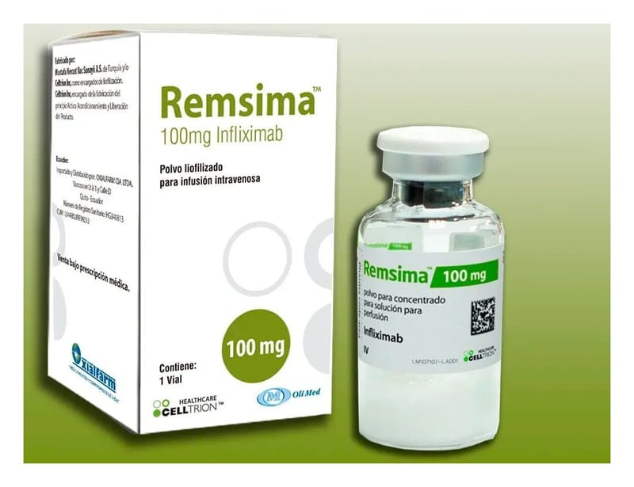

Remsima 100 mg I.V. İnfüzyon Çözeltisi Hazırlamak İçin Liyofilize Toz İçeren Flakon, 1 Adet

Ne için kullanılır
KT · Bölüm 1REMSİMA; konsantre infüzyon çözeltisi hazırlamak için flakon içinde beyaz liyofilize toz şeklinde sunulur. REMSİMA, Crohn hastalığı (Sindirim kanalı kalınlaşması ve ülserlerle giden iltihabi hastalık), romatoid artrit (Eklemlerin ağrı ve şekil bozukluğu ile giden iltihabi hastalık), ankilozan spondilit (Sırt eklemlerinde sertleşme ile seyreden ağrılı romatizmal hastalık), ülseratif kolit (Kalın bağırsak iç yüzeyini döşeyen tabakada ülserlerle giden iltihabi hastalık), psöriyatik
artrit (Sedef hastalarında eklemleri tutan romatizmal hastalık) ya da psöriyazis (Sedef; derinin iltihabi hastalığı) tedavisinde, enflamatuvar (İltihabi) aktivitenin azaltılması amacıyla kullanılmaktadır. Etkin maddesi olan infliximab, insan ve fare kaynaklı bir cins proteindir. İnfliximab vücutta özel bir proteini seçici olarak bağlar ve faaliyetini engeller; enflamasyon sürecinde yer alan bu proteine tümör nekrozis faktörü alfa ya da TNFα adı verilmektedir. Onun için REMSİMA’ya TNFα blokörü de denir. Romatoid artrit, Crohn hastalığı, ankilozan spondilit, psöriyatik artrit ya da psöriyazis gibi enflamatuvar hastalıklarda TNFα miktarları, yaygın bir şekilde yükselmiş durumdadır ve TNFα’nın faaliyetinin engellenmesi vücudunuzdaki enflamasyonun azalmasına sebep olur.
Romatoid artrit: Romatoid artrit eklemlerin enflamatuvar bir hastalığıdır. Eğer aktif romatoid artritiniz varsa, size önce başka ilaçlar verilecektir. Eğer başka ilaçlar verilmiş ve hastalığınızın bulgu ve belirtileri devam ediyorsa, size aşağıdaki amaçlar için metotreksat (Bağışıklık sistem baskılayıcı ilaç) ile kombinasyon şeklinde REMSİMA verilecektir: • Hastalığınızın bulgu ve belirtilerinin azaltılması, • Eklemlerinizdeki harabiyetin yavaşlatılması, • Fiziksel fonksiyonlarınızın iyileştirilmesi.
Crohn hastalığı: Crohn hastalığı, bağırsakların enflamatuvar bir hastalığıdır. Eğer Crohn hastalığınız varsa ve en az 18 yaşındaki bir erişkinseniz ya da 6-17 yaş grubundaki bir çocuksanız, size önce başka ilaçlar verilecektir. Eğer hastalığınızın bulgu ve belirtileri bunlara rağmen devam ediyorsa, size aşağıdaki amaçlar için REMSİMA verilecektir: • Bir kortikosteroid (iltihabi olayları ve bağışıklık sistemini baskılayıcı) ve/veya bir immünosupresan (bağışıklık sistemi baskılayıcı) ile kontrol edilemeyen veya bu tür ilaçları tolere edememiş iseniz, orta derecede ve şiddetli aktif Crohn hastalığının tedavisi için, • Başka ilaçlar veya ameliyat ile kontrol altına alınamamış, akıntılı enterokütanöz fistüllerin (bağırsaktan deriye açılan anormal kanallar) sayısının azaltılması için.
REMSİMA Crohn hastalığı olan 6 yaşın altındaki hastalarda kullanılmaz.
Ülseratif kolit Ülseratif kolit, enflamatuvar bir bağırsak hastalığıdır. Eğer ülseratif kolitiniz varsa, size önce başka ilaçlar verilecektir. Eğer bu ilaçlar yeterince iyi etki etmezse, hastalığınızın tedavisi için REMSİMA verilecektir.
Ankilozan spondilit Ankilozan spondilit, omurganın enflamatuvar bir hastalığıdır. Eğer ankilozan spondilitiniz varsa, size önce başka ilaçlar verilecektir. Eğer bu ilaçlar yeterince iyi etki etmezse, size aşağıdaki amaçlar için REMSİMA verilecektir: • Hastalığınızın işaret ve belirtilerinin azaltılması, • Fiziksel fonksiyonlarınızın iyileştirilmesi.
Psöriyatik artrit Psöriyatik artrit, genellikle psöriyazisin (sedef hastalığı) eşlik ettiği, eklemlerin enflamatuvar bir hastalığıdır. Eğer aktif bir psöriyatik artritiniz varsa, size önce başka ilaçlar verilecektir. Eğer bu ilaçlar yeterince iyi etki etmezse, size aşağıdaki amaçlar için REMSİMA verilecektir:
• Hastalığınızın işaret ve belirtilerinin azaltılması, • Fiziksel fonksiyonlarınızın iyileştirilmesi, • Eklem harabiyetinizin yavaşlatılması.
Psöriyazis Psöriyazis (sedef hastalığı), derinin enflamatuvar bir hastalığıdır. Eğer orta ile şiddetli plak (psöriyazisin bir tipi) psöriyazisiniz varsa, size önce başka ilaçlar ya da örn. fototerapi verilecektir. Eğer bu ilaçlar veya tedaviler yeterince iyi etki etmezse, sizdeki psöriyazisin bulgu ve belirtilerini azaltmak için REMSİMA verilecektir.